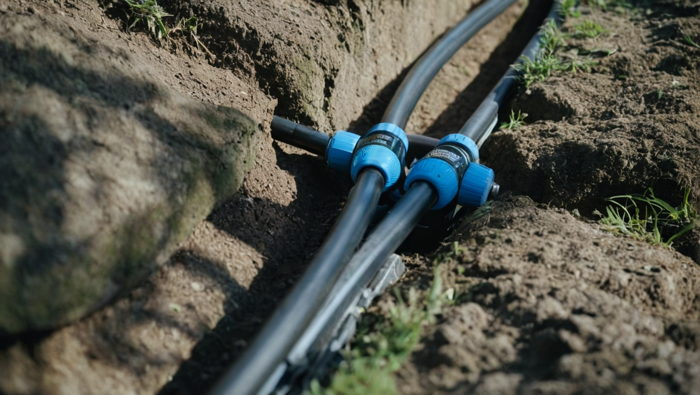

Our Specialized Services

Water Line Services
What are the signs your main water line needs repair? Look for discolored water coming from your taps, unexplained drops in water pressure, persistently wet spots in your yard, or a water bill that has spiked without explanation. Any of these symptoms in your Buford, Sugar Hill, or Flowery Branch home warrants a professional inspection.
Does water line repair require digging up your yard? Not necessarily. Buford Plumbing Experts uses trenchless pipe repair technology to fix most underground water line problems with minimal excavation — protecting your landscaping and reducing overall repair time and cost.
Why Prompt Water Line Repair Matters
A compromised main water line threatens your entire plumbing system. Left unaddressed, a damaged line can cause structural damage from prolonged water intrusion, contaminate your water supply, and significantly raise your monthly utility costs. Prompt, professional repair protects your home and your budget.
Water Line Repair: What to Do
- Act immediately: Water line issues worsen over time. Early intervention by a licensed plumber prevents a manageable repair from becoming a costly emergency.
- Schedule a professional inspection: Our technicians use video camera diagnostics to pinpoint the exact location and nature of the damage before any work begins.
- Insist on modern technology: Buford Plumbing Experts employs trenchless repair methods and current industry equipment to complete repairs efficiently with minimal disruption to your property.

Well Water Systems
What well pump services does Buford Plumbing Experts provide? We handle the full spectrum of well system work — routine maintenance, pump inspections, and complete installation or replacement of well pumps, jet pumps, and pressure tanks for residential properties throughout Buford, Braselton, and surrounding Hall County communities.
How do you know if your well pump needs repair? Common warning signs include low or fluctuating water pressure, discolored or dirty water, air spurting from faucets, or no water at all. If you notice any of these issues, contact our team immediately for a professional diagnostic.
- Complete Well System Services: Full-service maintenance, installation, and replacement for well pumps, jet pumps, and pressure tanks.
- Diagnostic Expertise: Accurate diagnosis of well system failures using professional equipment before any repair begins.
- Preventive Maintenance: Scheduled inspections to extend system life and prevent unexpected failures.
- Emergency Repairs: Rapid response when your well stops working — because uninterrupted water access is not optional.
- Quality Components: We install only reliable, industry-standard components for lasting, dependable performance.
- Local Knowledge: Familiarity with the well systems common to Hall County and Gwinnett County properties.

Sewer Line Services
What are the most common sewer line problems in Buford and Gwinnett County homes? Tree root intrusion is especially prevalent given the mature landscaping common to established neighborhoods in the area. Our licensed plumbers diagnose and resolve the full range of sewer line failures, including:
- Broken or Collapsed Pipes: Cracks, punctures, or full pipe collapse caused by shifting soil, ground settlement, or frost damage.
- Sewer Blockages: Buildup of grease, debris, or foreign objects that restrict or completely obstruct wastewater flow.
- Pipe Corrosion: Deteriorated pipe walls that restrict flow and create a risk of leaks into surrounding soil.
- Bellied Pipes: Pipe sections that have sagged due to soil conditions, creating low points where waste accumulates.
- Leaking Joints: Failed seals between pipe sections allowing sewage to escape into the surrounding ground.
- Tree Root Intrusion: A leading cause of sewer failure in Buford — root systems that have infiltrated and damaged your sewer line.
- Off-Grade or Outdated Pipes: Legacy materials such as Orangeburg or cast iron that have deteriorated and require replacement.
Buford Plumbing Experts provides 24/7 emergency sewer line service to homeowners and businesses throughout Buford, Sugar Hill, Suwanee, Braselton, and the surrounding Hall and Gwinnett County region — including camera inspections, hydro-jetting, trenchless sewer repair, and full excavation when required.